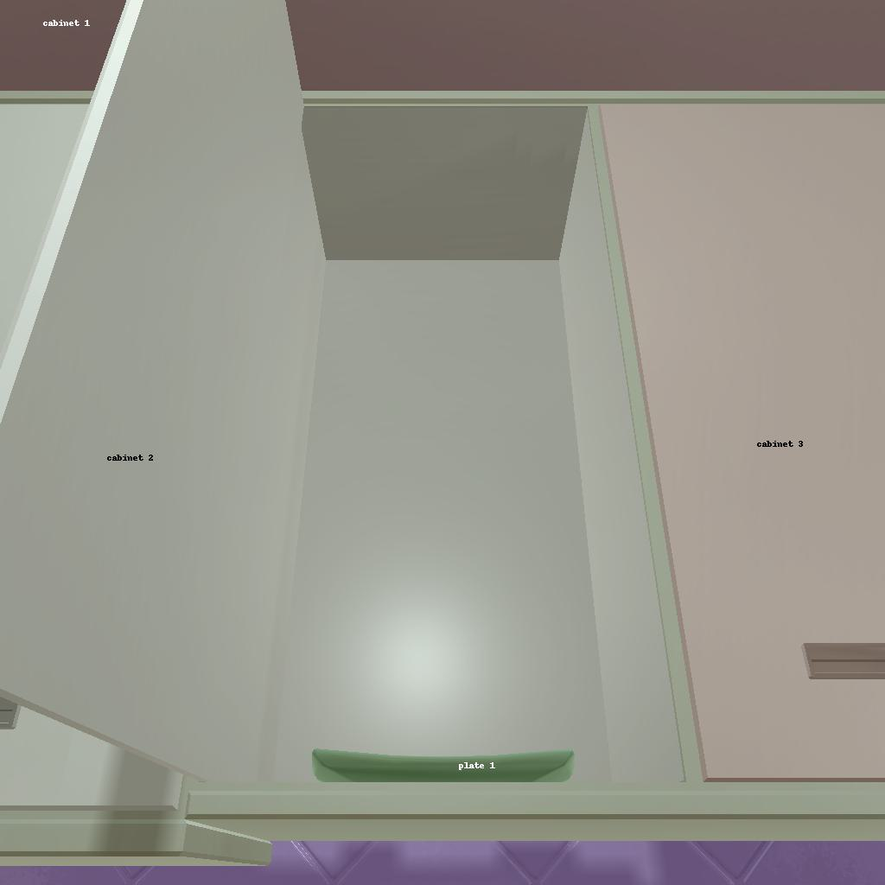

---------------------------------------------------------task: 21---------------------------------------------------------
--------------------------------------------------------------------------------------------------------------------------------------------------------------------
--------------------------------------------------------------------------------------------------------------------------------------------------------------------
Step:--------------------------------------------------------------------------7-------------------------------------------------------------------------------
----------------------------------------
VLM Prompt:
Image1:
**Instruction**
1. Analyze the provided image to identify all visible household objects, focusing on those relevant to the task description "put a hot cup in countertop."
2. Use the analysis of the image and the task hint "The agent must find an object of the desired type, pick it up, go to a microwave, heat the object with the microwave, then find the correct location to place it, and put it down there. The agent does not need to use the microwave button or open the microwave to heat the object, and the agent just needs to do action that is "heat the object with the microwave"." to answer the question: what is the most reasonable action in the choices for the task description "put a hot cup in countertop"?
4. Decide and write the answer using the template: The answer is: (i): , where i is the real number. If there is no desired object in the image, search every place based on **Initial Observation** to find the object. And if no one is exactly correct, choose a similar answer.
**Initial Observation**
You are in the middle of a room. Looking quickly around you, you can see cabinet (1-6), microwave (1), countertop (1-2), coffeemachine (1), toaster (1), sink (1), sinkbasin (1), fridge (1)
**Answer Choices**
(1): go to microwave 1
(2): go to cabinet 4
(3): go to cabinet 5
(4): go to cabinet 6
(5): go to countertop 1
(6): go to coffeemachine 1
(7): go to toaster 1
(8): go to countertop 2
(9): go to sink 1
(10): go to sinkbasin 1
(11): go to fridge 1
(12): open cabinet 3
(13): close cabinet 3
(14): examine cabinet 3
**Answer**
Let's think step by step by following the instructions.
----------------------------------------
----------------------------------------
Original Response:
The task is to put a hot cup on the countertop. To accomplish this, the agent must first find a cup. The image shows open cabinets, but there is no cup visible in the image provided. Therefore, the agent must search other places based on the initial observation.
The agent does not need to use the microwave button or open the microwave to heat the object, as per the instructions. Hence, the agent does not need to go to the microwave first.
There are six cabinets mentioned in the initial observation, but only cabinet 3 is visible in the image provided. Since we cannot see a cup in the open cabinets in the image, the agent should search the other cabinets.
Based on the task hint and initial observation, the most reasonable action would be to go to one of the cabinets that is not visible in the image to find a cup. Among the given answer choices, cabinet 4, cabinet 5, and cabinet 6 are the cabinets that are not shown in the image and could potentially have a cup.
Since the task description does not specify which cabinet the cup is in, we must choose one of them. Cabinet 4 is the first in the sequence after the visible cabinets, so it would be the next logical place to search.
The answer is: (2): go to cabinet 4.
----------------------------------------
----------------------------------------
>>> Refine Original VLM Response and Get Pure Action: go to cabinet 4
----------------------------------------
-----------------------------------------------------------------
Running time: 9.938765287399292 seconds
Total Money: 7.388060000000006
-----------------------------------------------------------------
-----------------------------------------------------------------
Text Observation:You arrive at loc 4. The cabinet 4 is closed.
-----------------------------------------------------------------
UNSUCCEED